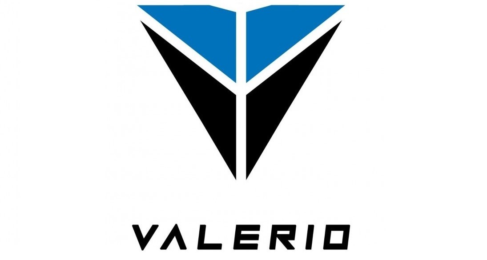

CURRENT COMPANIES

ADNUE
Founder(s):Bhomendra Singh Rathore
Year of Incorporation: 2019
Sector: Advertising
ADNUE is a hyper advertising platform where businesses can create, publish and monitor their advertising campaigns. Their analytics platform enables marketers to make data based decisions that helps in improving the overall ROI of their marketing campaigns by delivering insights which are real, trackable and measurable.
NAWGATI
Founder(s): Vaibhav Kaushik and Aalap Nair
Year of Incorporation: 2019
Sector: Deep Learning
Nawgati works on Intelligent Queue Management for Fuel Stations and More.Their specialities are Deep Learning, Mobile App, Data Analytics, Computer Vision, and Queue Management.

MEDSUPERVISION
Founder(s):Dr. Vinay Chamola
Year of Incorporation: 2020
Sector: Medical Services
The idea of Medsupervision is rooted as a response to the increasing problems being faced by the patients around the globe related to unanswered medical queries. Various patients suffer from chronic diseases such as cancer, CKD, liver disease, BP, diabetes, heart disease. Such patients regularly face some abnormalities in their health and regularly face some minor doubts related to their diet, medications, values in reports, side effects, other abnormal symptoms, etc. It is not always possible, easy, and financially viable to pay (800-2000 INR) to book an appointment, travel (2-3 Hrs) to hospital, and wait for (3-4 Hrs) in the hospital to meet the doctor to clarify a small doubt. In such scenarios, if the patients are little web techie, they try to search for some related posts on google. Such posts are generally tricky to find, and they do not directly address the specific concern. If they are not comfortable with technology, they simply keep tolerating the issue until the next appointment or keep trying their own remedies. Such remedies put the lives of patients at stake as they are already suffering from some dysfunctioning of a vital organ. Medsupervision aims to provide a user friendly and easy to use environment for the patients where they can ask all their health-related queries and can get a prompt response
NIROGGYAN
Founder(s): Joyneel Acharya, Shweta Gandhi and Varun Kalra
Year of Incorporation: 2019
Sector: Medical Technologies
To transform the way everyone reads their test reports, NirogGyan’s cloud-based SaaS integrates with IT systems of clients & renders anonymised patient data into SmartReports. Digital & print-friendly, the platform completely replaces the original report, keeping it simple for clients. Its SmartReports are — • Comprehensive (150+ biomarkers) • Well-designed & visualised • Evidence-backed content • Customisable & support non-English languages Feedback from 90+ labs & 85 doctors who've used has shown that users had a much better diagnostics experience with SmartReports — positive online reviews, better understanding & 90% claimed improved communication with physicians.


VALERIO ELECTRIC
Founder(s):Sarthak Mahapatra and Moksh Garg
Year of Incorporation: 2020
Sector: Smart Application Development
Valerio provides an innovative solution enabled by IoT, which addresses the given problem. Real-time data from sensors in charging ports help gauge the occupancy at a particular station and also estimate the time required for the occupying vehicles to charge them. Based on this data, nearby users who require charging are alerted via a mobile application and re-routed to the nearest station having empty slots. These slots can be pre-booked by them to provide a hassle-free charging service. Apart from this, we provide charging stations that derive power from solar energy to create an eco-friendly and sustainable infrastructure.
URBANTRACK
Founder(s): Shivam Soni
Year of Incorporation: 2019
Sector: Travel and Tech
Urban Track India is India's first integrated multimodal transit feeder service, festooned with a personalized touch, that bloomed in another banal college dormitory. It targets to accommodate local and regional traffic by unifying all modes of transit and corroborate finer trip experience for daily commuters and operation revenue capabilities for transit suppliers.